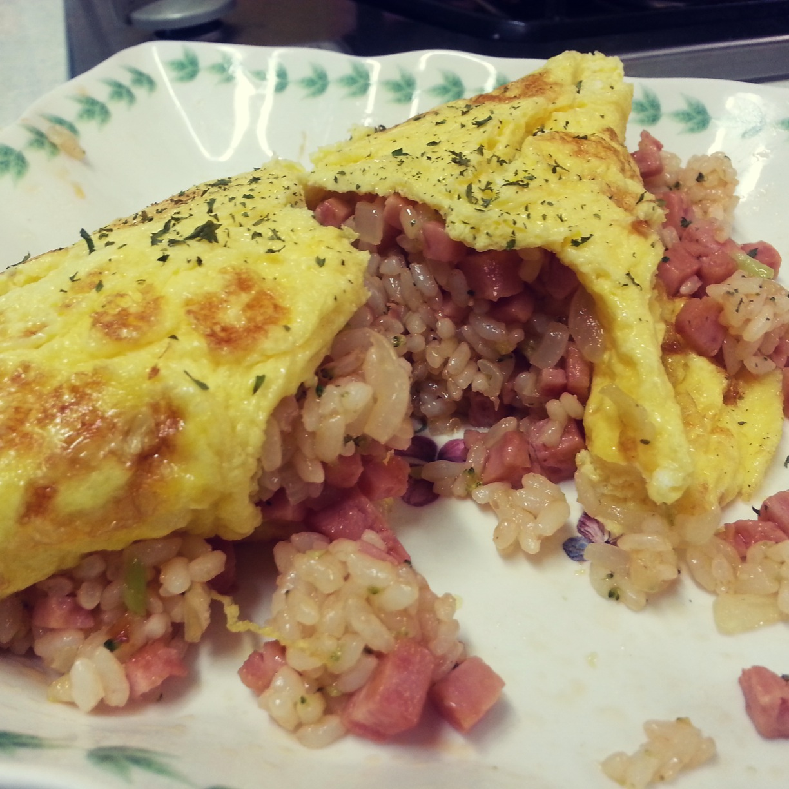
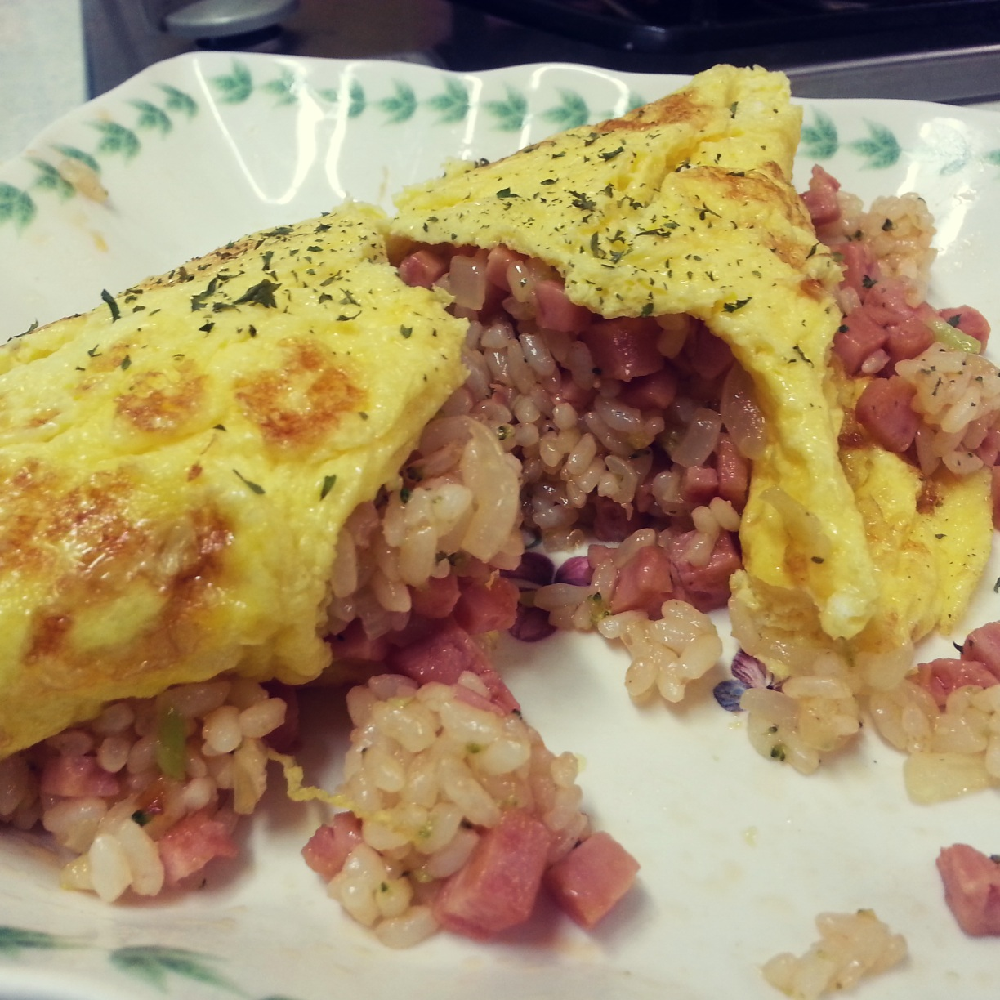
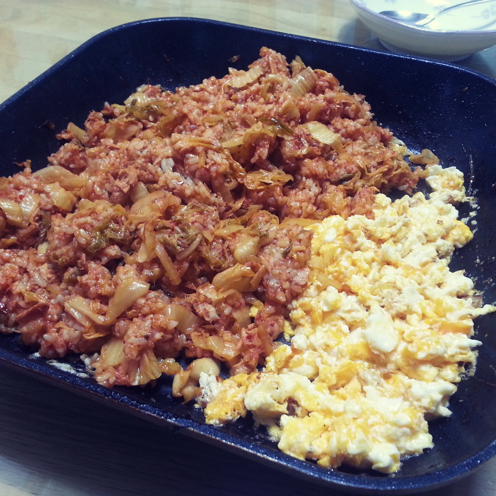
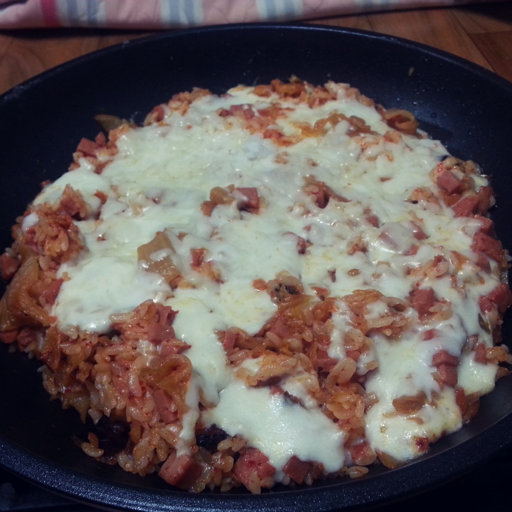
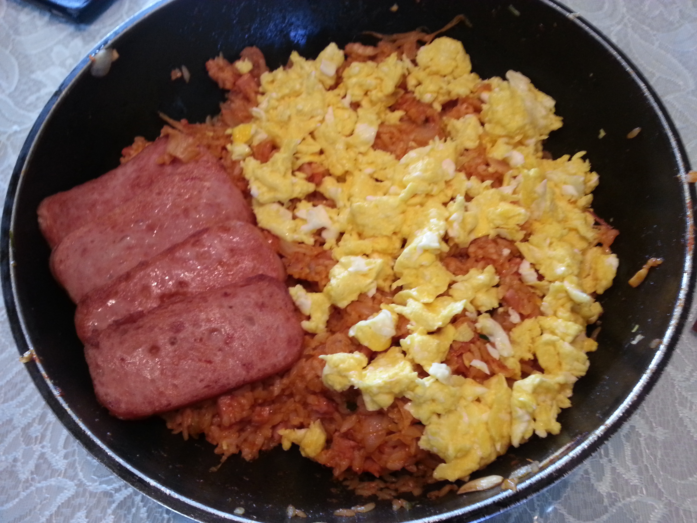

[한식] (김치)볶음밥 | Cook
두 번은 집에서,
한 번은 강원대 친구의 자취방에 놀러가서,
한 번은 친구네 집에 놀러가서...
볶음밥을 만들어 보았습니다ㅎㅎ
김치 볶음밥은 뭐 보편적으로 많이들 해먹는거니까..
딱히 재료가 준비되어야 하기 보다는
그냥 집에 있는것들 긁어 모아서 막 넣는거죠 뭐...ㅋㅋㅋ
굳이 준비물을 쓰자면.. 뭐 꼭 필요한건..?
김치, 밥, 기름
적어도 이건 있어야죠?ㅋㅋㅋ
참치 / 스팸 / 계란 / 양파 / 등등.. 은 기호에 따라..
 

김치 볶음밥... 이라기보단 오므라이스에 가깝죠?
계란이 사실 좀 실패해서 아쉽지만 저는 맛있게 먹었으니 됐죠 뭘.

이건 참치 김치 볶음밥 + 스크램블 에그 입니당ㅎㅎ
보통 참치를 맨 나중에 넣는 경우가 있는데,
참치를 먼저 넣고 볶으면 더 맛있습니다.
진짜에요.. 백종원 아저씨가 그랬어요..
고추가루도 넣어주고, 간장을 두 숟갈정도 넣어줍니다.
맛있겠쥬~? ㅎㅎ

강원대 친구 자취방에 놀러갔는데..
거의 집에서 뭘 만들어먹지를 않는 친구라
정말 열악한 환경에서 탄생한 김치볶음밥이에요..
도마가 없어서 우유팩을 잘라 즉석에서 만들어 썼답니다..ㅋㅋㅋ
그래도 모든걸 치즈가 살렸어요. 치즈는 옳습니다.

수능 끝나고 친구집 가서 만들었던 볶음밥~!! ㅋㅋ
4인분이라 스팸도 4개..ㅎㅎ 양이 많으면 많을수록,
정교한 요리는 잘.. 안되는 것 같아요.. 질보다 양..ㅋㅋ
볶음밥 종류는 누구나 어렵지 않게 잘 만들 수 있는 음식중에 하나 인 것 같아요.
재료들을 다 잘게 썰어주고 볶은 다음, 적당량의 밥도 넣고 볶아주면 끝
적당히가 가장 어려운 표현인데.. ㄷㄷ